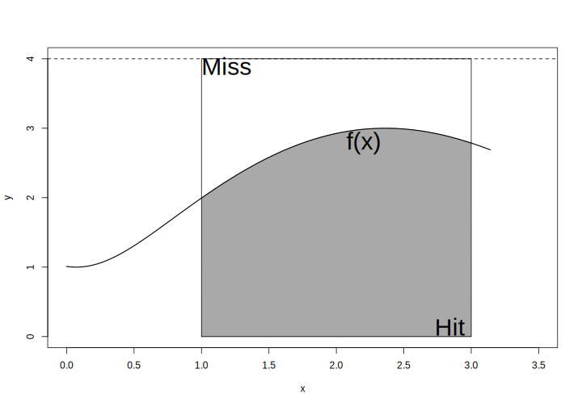

10.3 몬테칼로 시뮬레이션
- 우리가 알고 있는 확률과 기댓값의 정의는 모두 반복 횟수에 제한없이 무한대로 확률실험(무작위 과정)을 반복 했을 때의 상황을 설정한 것임
- 즉 컴퓨터를 통해 수학적 확률 또는 기댓값을 정확히 계산할 수 없어도 무작위 실험을 매우 많이 반복해 특정 사건이 일어날 확률이나 기댓값 추정이 가능 \(\rightarrow\) 몬테칼로 시뮬레이션의 기본 idea
10.3.1 동전 던지기
실제 정상적인 동전을 던졌을 때 앞/뒷면이 나올 확률이 1/2 일까?
정상적인 동전 던지기 실험
구현
sample()함수를 통해 매우 간단히 구현 가능- 함수 적용 시 가장 중요한 부분은 복원 추출을 한다는 점임
- 매번 시행이 독립시행이고 매회 시행 시 앞면과 뒷면이 나올 확률이 같도록 유지해야 함
# 동전 실험
coin_flip <- function(faces, ntry = 100) {
record <- sample(faces, size = ntry, replace = TRUE)
prob1 <- sum(record == faces[1])/ntry
prob2 <- 1 - prob1
p <- list(prob1, prob2)
for (i in 1:length(faces))
cat(paste0("Proprotion ", faces[i], ":"), p[[i]], "\n")
}
coin <- c("H", "T")
set.seed(1000)
coin_flip(coin, ntry = 10) # 10회Proprotion H: 0.5
Proprotion T: 0.5 coin_flip(coin, ntry = 20) # 20회 Proprotion H: 0.4
Proprotion T: 0.6 coin_flip(coin, ntry = 100) # 100회 Proprotion H: 0.53
Proprotion T: 0.47 coin_flip(coin, ntry = 1000) # 1000회 Proprotion H: 0.516
Proprotion T: 0.484 coin_flip(coin, ntry = 10000) # 10000회 Proprotion H: 0.4988
Proprotion T: 0.5012 coin_flip(coin, ntry = 100000) # 100000회 Proprotion H: 0.49925
Proprotion T: 0.50075 10.3.2 기댓값 추정
정상적인 동전 두 번을 던졌을 때,
- 모두 뒷면이 나온 경우 1000 원을 잃음
- 둘 중 하나가 앞면이 나온 경우 비김
- 모두 앞면이 나온 경우 2000 원을 가짐
동전을 던져서 내가 딴 돈의 금액을 \(X\) 라고 하면 \(X\)는 -1000, 0, 2000 의 값을 갖는 확률변수이고 다음과 같은 표본공간을 가짐
\[ S = \{HH,~HT,~TH,~TT \} \]
위의 사건들은 다음과 같이 처음 정한 금액에 대응됨.
- HH \(\rightarrow\) \(X = 2000\)
- HT \(\rightarrow\) \(X = 0\)
- TH \(\rightarrow\) \(X = 0\)
- TT \(\rightarrow\) \(X = -1000\)
따라서, 각 금액에 대응한 확률은
| x | -1000 | 0 | 2000 |
| p | 1/4 | 2/4 | 1/4 |
게임에서 내가 얻을 금액에 대한 기댓값
\[ E(X) = -0.25 \times 1000 + 0 \times 0.5 + 2000 \times 0.25 = 250 \]
구현
- 동전 던지기 시뮬레이션 코드에서 사용한
sample()함수 사용 - 금액과 각 금액에 대응하는 확률값, 시행 횟수를 함수의 인수로 입력
simple_game <- function(x, p, ntry = 10) {
record <- sample(x, size = ntry, replace = TRUE, prob = p)
expect <- mean(record)
cat("당신이 이 게임을 무한히 반복한다면 평균적으로 ", expect,
"원을 가져갈 것입니다.", "\n")
}
x <- c(-1000, 0, 2000)
p <- c(1/4, 2/4, 1/4)
set.seed(2371)
simple_game(x = x, p = p, ntry = 10) # 10회 실행당신이 이 게임을 무한히 반복한다면 평균적으로 900 원을 가져갈 것입니다. simple_game(x = x, p = p, ntry = 50) # 50회 실행 당신이 이 게임을 무한히 반복한다면 평균적으로 40 원을 가져갈 것입니다. simple_game(x = x, p = p, ntry = 100) # 100회 실행 당신이 이 게임을 무한히 반복한다면 평균적으로 170 원을 가져갈 것입니다. simple_game(x = x, p = p, ntry = 1000) # 1000회 실행 당신이 이 게임을 무한히 반복한다면 평균적으로 234 원을 가져갈 것입니다. simple_game(x = x, p = p, ntry = 10000) # 10000회 실행 당신이 이 게임을 무한히 반복한다면 평균적으로 241.2 원을 가져갈 것입니다. simple_game(x = x, p = p, ntry = 100000) # 100000회 실행 당신이 이 게임을 무한히 반복한다면 평균적으로 247.64 원을 가져갈 것입니다. sum(x*p) # 실제값[1] 250확률 및 기대값 추정 모두 시행횟수가 증가할 수록 실제 이론적 값에 근사하는 것을 눈으로 확인 가능함. 즉, 통계학의 근간이 되는 대수의 법칙(law of large number) 에 따른 자연스러운 결과임.
10.3.3 몬테칼로 적분법(sample-mean Monte-carlo integration)
컴퓨터를 이용해 적분값 계산 시, 적분하고자 하는 적절한 차수의 도함수가 존재하는 경우 일반적으로 수치적분법(직사각형, 사다리꼴, simpson 적분법 등)을 사용할 수 있으나, 도함수가 존재하지 않을 경우 또는 다중 적분을 해야하는 경우 수치적분법 적용이 어려움. 몬테칼로 적분법은 복잡한 적분식에 대한 해를 구하기(추정하기) 위해 고안되었으며 매우 간단하게 적분식의 해를 찾을 수 있는 장점이 있음. 대략적 원리는 다음과 같음.
- 함수의 적분값을 하나의 모수로 보고 임의표본추출을 통해 해당 모수를 추정
\[ E[f(x)] = \int f(x) p(x) dx \approx \frac{1}{N}\sum_{i=1}^{N}f(x_i) \]
적중법(Hit or miss)
- \(f(x) = 2 + \cos(x + \sin(\arctan(x) + 3)\) 일 때, \(a = 1\) 에서 \(b = 3\) 아래 면적은 다음과 같음
\[ I = \int_{a = 1}^{b = 3} f(x)~dx \]
x <- seq(0, pi, length = 500)
y <- 2 + cos(x + sin(atan(x)) + 3)
plot(x, y, type = "n",
ylim = c(0, 4), xlim = c(0, 3.5))
idx <- x >= 1 & x <= 3
polygon(c(1, x[idx], 3),
c(0, y[idx], 0),
col = "darkgray",
border = "darkgray")
lines(x, y, lwd = 1.5)
rect(1, 0, 3, 4, lty = 1)
abline(h = 4, lty = 2)
text(3, 0.1, "Hit", cex = 2.5, adj = 1, pos = 2)
text(1, 3.9, "Miss", cex = 2.5, adj = 0)
text(2.2, 2.8, "f(x)", cex = 2.5)
- 위 그림에서 \(x\) 축과 평행한 \(y = c\)의 선을 그었을 때 \(a\), \(b\) 구간 상에 사각형 면적은 \(c(b-a)\) 임.
- 사각형에서 \(I\)가 차지하는 비율을 \(p\) 라고 할 때, \(I = c(b - a)p\) 임.
- 위 사각형 안에 랜덤하게 N개의 점을 x-y 좌표 상에 찍었을 때, \(f(x)\) 아래 놓인 점의 개수를 \(X\)라고 하면 \(X\)은 모수가 \(N\), \(p\)인 이항분포를 따름.
- 따라서 \(\hat{p} = X/N\)이고 \(f(x)\) 아래 면적 \(I\)의 추정값은 아래와 같음.
\[ \hat{I} = c(b - a)\frac{X}{N} \]
구현: \(\pi\) 값 계산
- Idea: 원의 면적은 \(\pi r^2\)이므로 반지름이 1인 경우 \(\pi\)랑 동일 \(\rightarrow\) \(x^2 + y^2 = 1\)인 원을 고려
- 1사분면에 해당하는 영역에서 랜덤하게 점을 찍은 후 4분원의 면적을 추정한 다음 4를 곱하면 \(\pi\) 값 추정 가능
hit_pi <- function(ntry) {
X <- 0
for (i in 1:ntry) {
xy <- runif(2, 0, 1)^2
if (sum(xy) < 1) X <- X + 1
}
cat("Estimated pi: ", sprintf("%.6f", 4 * X/ntry, "\n"))
}
set.seed(314)
hit_pi(100) # 100Warning in sprintf("%.6f", 4 * X/ntry, "\n"): one argument not used by format
'%.6f'Estimated pi: 3.000000hit_pi(1000) # 1,000Warning in sprintf("%.6f", 4 * X/ntry, "\n"): one argument not used by format
'%.6f'Estimated pi: 3.184000hit_pi(10000) # 10,000Warning in sprintf("%.6f", 4 * X/ntry, "\n"): one argument not used by format
'%.6f'Estimated pi: 3.148000hit_pi(100000) # 100,000Warning in sprintf("%.6f", 4 * X/ntry, "\n"): one argument not used by format
'%.6f'Estimated pi: 3.140080hit_pi(1000000) # 1,000,000Warning in sprintf("%.6f", 4 * X/ntry, "\n"): one argument not used by format
'%.6f'Estimated pi: 3.137764system.time(hit_pi(5000000)) # 5,000,000Warning in sprintf("%.6f", 4 * X/ntry, "\n"): one argument not used by format
'%.6f'Estimated pi: 3.141950 사용자 시스템 elapsed
10.646 0.029 10.684 pi[1] 3.141593표본평균을 활용한 몬테칼로 적분
- 적중법의 비효율성 개선
- 적분을 어떤 확률변수의 기댓값으로 표현하여 적분값을 추정
- 확률변수 \(X \sim \mathrm{Uniform(a, b)}\) 일 때,
\[ E[f(x)] = \int_a^{b} f(x)p(x)~dx = \frac{1}{b - a}\int_a^b f(x)~dx \] - 적분값은
\[ \begin{aligned} I &= \int_a^b f(x)~d(x) = (b-a)E[f(x)] \\ E[f(x)] &= \frac{1}{N}\sum_{i = 1}^N f(x_i),~~ x_i \stackrel{iid}{\sim} \mathrm{Uniform}(a, b) \end{aligned} \]
구현: \(\pi\) 계산시간 비교
mean_pi <- function(ntry) {
x <- runif(ntry, -1, 1)
I = 4*mean(sqrt(1 - x^2))
cat("Estimated pi: ", sprintf("%.6f", I), "\n")
}
set.seed(314)
mean_pi(100) # 100Estimated pi: 3.251687 mean_pi(1000) # 1,000Estimated pi: 3.155947 mean_pi(10000) # 10,000Estimated pi: 3.140608 mean_pi(100000) # 100,000Estimated pi: 3.143188 mean_pi(1000000) # 1,000,000Estimated pi: 3.140865 system.time(mean_pi(5000000)) # 5,000,000Estimated pi: 3.141221 사용자 시스템 elapsed
0.192 0.019 0.211 10.3.4 Buffon의 바늘 실험
간격이 \(d\)인 평행선들이 그려져 있는 책상 위에 길이가 \(l\) 인 바늘을 던졌을 때, 이 바늘이 책상 위에 그려진 선에 걸쳐질 확률
원문: 떨어진 거리가 같은 평행선들이 그어진 마룻바닥에 바늘을 떨어뜨렸다. 바늘이 금에 닿을 확률은 얼마인가?
Georges-Louis Leclerc, Comte de Buffon (1777)
조건
- 바늘의 길이는 선 사이 간격보다 작다(\(l < d\))
Figure 10.1: Buffon의 바늘실험: 바늘이 선에 걸쳐진 경우
Figure 10.2: Buffon의 바늘실험: 바늘이 선에 걸쳐지지 않은 경우
- \(m\): 바늘의 중앙점
- \(a\): 두 평행선 중 \(m\)과 가까운 평행선에서 \(m\) 까지의 직선거리
- \(\theta\): 바늘과 평행선이 이루는 각도
Fact
\(d > l\) 조건 하에서
- \(a\)는 가장 가까운 선과의 직선거리이기 때문에 \(d/2\)보다 클 수 없음 \(\rightarrow\) \(0 \leq a \leq d/2\) \(\rightarrow\) \(a \sim \mathrm{Uniform}(0, d/2)\)
- 선을 벗어난 바늘 끝을 지나는 가상의 평행선과 \(m\) 사이의 수직 거리는 \(l/2\sin \theta\)
- 바늘이 선에 걸치는 경우는 \(l/2\sin \theta\) 가 \(a\) 보다 긴 경우임 \(\rightarrow\) \(0 \leq a \leq l/2\sin \theta\) \(\rightarrow\) \(\theta \sim \mathrm{Uniform}(0, \pi)\)
- \(\therefore\) 바늘이 선에 걸쳐질 확률은
\[ P(바늘이~걸쳐질 ~확률) = P\left (0 \leq a \leq \frac{l}{2} \sin \theta \right ) \]
두 확률변수의 결합분포를 구한 후 결합밀도함수에 대한 적분값(확률)을 구하는 문제!!
수학적 표현
\(a\) 에 대한 확률분포
\[ a \sim \mathrm{Uniform}(0, d/2) = \begin{cases} \frac{2}{d}, & 0 \leq a \leq d/2 \\ 0, & \mathrm{otherwise} \end{cases} \]
\(\theta\) 에 대한 확률분포
\[ \theta \sim \mathrm{Uniform}(0, \pi) = \begin{cases} \frac{1}{\pi}, & 0 \leq \theta \leq \pi \\ 0, & \mathrm{otherwise} \end{cases} \]
두 확률변수가 독립이기 때문에 \(a\)와 \(\theta\)의 결합분포는 아래와 같음
\[ f(a, \theta) = \begin{cases} \frac{2}{d\pi}, & 0 \leq a \leq d/2;~ 0 \leq \theta \leq \pi \\ 0, & \mathrm{otherwise} \end{cases} \]
따라서 바늘이 평행선에 걸쳐질 확률은
\[ \begin{align} P\left (0 \leq a \leq \frac{l}{2} \sin \theta \right ) &= \int_{\theta = 0}^{\pi}\int_{a = 0}^{(l/2)\sin \theta} \frac{2}{d\pi} \,da\,d\theta\\ &= \int_{\theta = 0}^\pi \frac{l\sin\theta}{d\pi}\,d\theta \\ &= \frac{l\cos\theta}{d\pi} \Big|_{0}^\pi = \frac{2l}{d\pi} \end{align} \]
위 식을 이용해 모의실험을 통해 \(\pi\) 값 추정이 가능.
\[ \hat{\pi} = \frac{2l}{d\hat{P}} \]
실제 모의실험 시 확률 계산 방법
- 바늘의 중점에서 가장 가까운 평행선 까지 수평 거리는 \(d/2\) 안에 있기 때문에 표본공간(\(S\))은 다음과 같이 정의할 수 있음.
\[ S = \{(a, \theta)|0 \leq a \leq \frac{d}{2}, ~ 0 \leq \theta \leq \pi \} \]
- 표본공간 \(S\)에서 \(\frac{l}{2} \sin \theta\)의 함수 아래 면적(\(A\))이 결국 바늘이 평행선 상에 걸칠 확률임. 따라서
\[ P\left (0 \leq a \leq \frac{l}{2} \sin \theta \right ) = \frac{\mathrm{A}의~넓이}{\mathrm{S}의~넓이} = \frac{\int_0^{\pi} 0.5l\sin{\theta}~d\theta}{0.5d\pi} = \frac{2l}{d\pi} \]
- 기하학적 표현
# l = 1, d = 2
l <- 1; d <- 2
x <- seq(0, pi, by = 0.01)
y <- 0.5 * l * sin(x)
plot(1, xlim = c(0, pi),
ylim = c(0, d/2),
type = "n",
xlab = expression(theta),
ylab = "d/2",
cex.lab = 1.5)
polygon(x, y, col = "yellow", border = "yellow")
lines(x = x, y = y, lty = 1, lwd = 2)
rect(0, 0, pi, 1, lty = 2, lwd = 1.5)
text(x = 1.5, y = 0.6,
expression(paste(f, "(", theta, ")" == frac(l, 2) * sin * theta)),
adj = 0,
cex = 2)
text(x = 0.05, y = 0.95, "S", adj = c(0,1), cex = 2)
text(x = pi/2, y = 0.2, "A", adj = 0, cex = 2)Figure 10.3: Buffon 바늘 실험의 표본 공간과 확률 영역
Implementation
- 실제 바늘이 던져지는 상황 시각화
Buffon의 바늘실험(30회 실행), 그림은 buffon_needle_draw.R 함수 참고
buffon_needle_draw <- function(nmax = 20,
l = 0.8, # 바늘의 길이
d = 1, # 두 평생선 간 간격
col = c("lightgray", "red"),
plot = TRUE,
return.value = FALSE) {
# 반복 초기화
j <- 1; n <- 0
# x <- y <- x0 <- y0 <- theta <- a <- rep(NA, ani.options("nmax"))
x <- y <- x0 <- y0 <- theta <- a <- rep(NA, nmax)
while (j <= length(x)) {
theta[j] <- runif(1, 0, pi)
a[j] <- runif(1, 0, d/2)
y[j] <- sample(c(0.5 * d + a[j], 1.5 * d - a[j]), 1)
x[j] <- runif(1, 0, l)
# 바늘이 떨어졌을 때 수평선과 이루는 각도 반영
x0[j] <- 0.5 * l * cos(theta[j])
y0[j] <- 0.5 * l * sin(theta[j])
j <- j + 1
if (plot) {
dev.hold()
plot(1, xlim = c(-0.5*l, 1.5*l),
ylim = c(0, 2*d),
type = "n",
xlab = "", ylab = "", axes = FALSE)
axis(1, c(0, l), c("", ""), tcl = -1)
axis(1, 0.5 * l, "L", font = 3, tcl = 0, cex.axis = 1.5,
mgp = c(0, 0.5, 0))
axis(2, c(0.5, 1.5) * d, c("", ""), tcl = -1)
axis(2, d, "D", font = 3, tcl = 0, cex.axis = 1.5, mgp = c(0, 0.5, 0))
box()
bd <- par("usr") # 실제 device plot 영역 상 x-y 좌표 시작 끝 점 정보 반환
rect(bd[1], 0.5 * d, bd[2], 1.5 * d, col = col[1])
abline(h = c(0.5 * d, 1.5 * d), lwd = 2)
# 그림 1: 부폰의 바늘 실험: 바늘과 평행선
# 실제 바늘이 평행선 안에 떨어지는 모습 모사
segments(x - x0, y - y0,
x + x0, y + y0,
col = col[2])
dev.flush() #
Sys.sleep(1)
}
}
if(return.value) {
result <- list(nmax =nmax, l = l, d = d, a = a, theta = theta)
return(result)
}
}
# buffon_needle_draw(nmax = 20, l = 0.8, d = 1, plot = TRUE, return.value = FALSE)
set.seed(5000)
# 바늘의 길이가 15이고 평행선 간격이 20일 때 바늘이 평행선에 걸칠 확률
param <- buffon_needle_draw(nmax = 5000,
l = 15,
d = 20,
plot = FALSE,
return.value = TRUE)- \(P(A)\) 계산: 표본공간 및 바늘을 던졌을 때 표본공간 안에 바늘이 들어와 있는지 확인 \(\rightarrow\) 바늘이 금에 걸쳐질 확률 계산
- step 0: 바늘의 길이(\(l\))과 수평선 사이 거리(\(d\)) 설정
- step 1: \(a ~ \mathrm{Uniform}(0, d/2)\)에서 난수 한개 발생
- step 2: \(\theta ~ \mathrm{Uniform}(0, \pi)\)에서 난수 한개 발생
- step 3: 바늘이 선에 걸치는 경우(\(a \leq 0.5l\sin{\theta}\)) 카운트한 후 확률 계산
buffon_prob <- function(param,
plot = TRUE,
ndraw = 20) {
# browser()
l <- param$l
d <- param$d
a <- param$a
theta <- param$theta
ntry <- length(a)
A <- a <= 0.5 * l * sin(theta)
phati <- cumsum(A)/(1:ntry)
phat <- sum(A)/ntry # 시뮬레이션 추정 확률
ptrue <- 2*l/(pi*d) # 이론적 확률
idx <- NULL
if (plot) {
for (i in 1:ndraw) {
dev.hold()
x = seq(0, pi, by = 0.01)
plot(x, 0.5 * l * sin(x), type = "l", ylim = c(0, 0.5 * d),
bty = "l", xlab = "", ylab = "", col = "black")
# rect(0, 0, pi, d/2, lty = 2, lwd = 1.5)
text(pi/2, 0.4 * l, expression(y == frac(L, 2) * sin(theta)), cex = 1.5)
idx = c(idx, as.numeric(a[i] > 0.5 * l * sin(theta[i])) + 1)
points(theta[1:i], a[1:i], col = c("red", "blue")[idx])
phatii <- format(phati[i], nsmall = 6, digits = 6)
legend("topright", legend = substitute(hat(P) == phatii,
list(phatii = phatii)), bty = "n", cex = 1.3)
dev.flush() #
Sys.sleep(0.05)
}
}
cat("True Probability:", sprintf("%.3f", ptrue), "\n")
cat("Estimated Probability:", sprintf("%.3f (total %d dropping)", phat, ndraw), "\n")
}
buffon_prob(param, plot = FALSE, ndraw = 5000)True Probability: 0.477
Estimated Probability: 0.478 (total 5000 dropping) Buffon의 바늘실험(500 회 실행): 표본공간 상 바늘을 던졌을 때 사건 A 집계 과정
- 추정한 \(\hat{\pi}\) 값이 횟수가 증가할수록 실제 \(\pi\) 값에 수렴하는지 확인
buffon_pi_estimate()
buffon_pi_estimate <- function(param, plot = TRUE, ndraw = 20) {
# browser()
l <- param$l
d <- param$d
a <- param$a
theta <- param$theta
ntry <- length(a)
A <- a <= 0.5 * l * sin(theta)
csum_A <- cumsum(A)
phat <- csum_A/(1:ntry) # i 번째 시행 때 까지 바늘이 선에 걸쳐질 확률
pihat <- (2 * l)/(d * phat) # pi 계산
if (plot) {
for (i in 1:ndraw) {
dev.hold()
plot(pihat[1:i], ylim = c((1 - 0.5) * pi, (1 + 0.5) * pi),
xlim = c(0, ndraw),
xlab = paste("바늘 던진 횟수:", i), ylab = expression(hat(pi)),
type = "l", col = "black",
cex.lab = 1.5)
abline(h = pi, lty = 2, col = "red")
# phati <- sprintf("%.6f", pihat[i])
pihati <- format(pihat[i], nsmall = 7, digits = 7)
legend("topright", legend = substitute(hat(pi) == pihati,
list(pihati = pihati)), bty = "n", cex = 1.3)
dev.flush() #
Sys.sleep(0.05)
}
}
cat("Estimated pi: ", sprintf("%.6f (%d dropping)", pihat[ndraw], ndraw))
}
buffon_pi_estimate(param, plot = FALSE, ndraw = 5000)Estimated pi: 3.139389 (5000 dropping)Buffon의 바늘실험(500 회 실행): PI 추정 과정